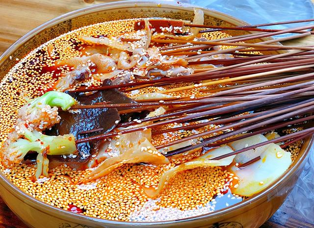
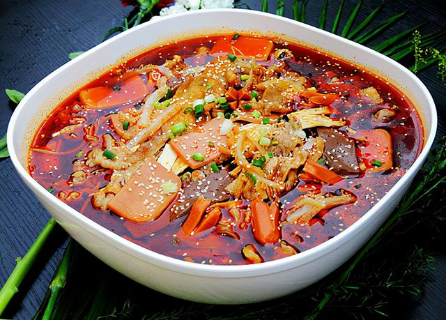

首页
家乡简介
景点
美食
视频
登录/注册
美食
糖油果子
糖油果子是四川成都的传统小吃，是用糯米、红糖和芝麻为主料，先油炸，再裹上白芝麻，最后用竹签串起来即可。看起来色泽黄亮，吃起来外酥里糯、香甜可口。
三大炮
三大炮在成都美食里算是名气很响亮的一个，因为在制作的过程中会发出“当、当、当”的声音，所以取名三大炮。吃起来香甜可口、不腻不粘。不过由于成都的高速发展，制作三大炮的这门手艺日渐衰落，现在能买到正宗三大炮的只有文殊坊和锦里这两个地方了，其他很多地方只有在每年举行一些大型活动时才能买到。
油茶
四川的这个油茶和北方人喝的油茶可不是一个东西，四川油茶是用黄豆和大米为原料制作出来的可以当早餐的小吃，麻辣鲜香。

钵钵鸡
钵钵鸡是成都的传统名小吃，是把煮好的鸡肉用竹签串起来，然后放进调好料汁的“钵钵”里，吃起来皮脆肉嫩，麻辣鲜香，被成都人命名为优质名小吃。钵钵鸡是每一位来到成都的外地游客都忍不住要品尝的美食。
冰粉
冰粉是四川农村人夏天最喜欢吃的小吃，是用一种植物的种子经过反复搓揉出的汁液凝固而成的美食。吃的时候加上一点红糖，清凉、冰爽，大人小孩都很爱吃。

冒菜
冒菜是成都的特色美食之一，是把各类食材放在调好的汤里煮熟，然后配上调料一起吃。也有人说冒菜是一个人的火锅，火锅是一群人的冒菜，但是其实冒菜和火锅还是有区别的，冒菜的汤是可以直接喝的，而火锅的锅底一般是不会有人直接喝的。
查看更多
景点
成都大熊猫繁育研究基地
大熊猫繁育科研机构，完全模拟大熊猫野外生活环境，建有湖泊、溪流、竹林、草坪等，共饲养100多只大熊猫。除了大熊猫，还可以看到黑颈鹤、孔雀、鹭鸶等小动物。太阳产房和月亮产房集中了最可爱的刚出生、几个月的熊猫团子，非常可爱，强烈推荐！
都江堰景区
都江堰是全世界迄今为止，年代最久、唯一留存、以无坝引水为特征的宏大水利工程。主要有鱼嘴分水堤、飞沙堰溢洪道、宝瓶口进水口三大部分构成，一直发挥着防洪灌溉的作用。
武侯祠
纪念的是蜀国丞相诸葛亮，明朝初年并入汉昭烈庙，也是全国影响最大的三国遗迹博物馆。由惠陵、汉昭烈庙、武侯祠三部分组成。祠内供奉刘备、诸葛亮等蜀汉英雄塑像50尊。
文殊院
文殊院始建于隋朝，是川西著名佛教寺院，院内珍藏着许多珍贵文物和上万册佛经、文献。寺院内有天王殿、三大士殿、大雄宝殿等，还供奉着大小300余尊佛像。
青城山
青城山位于都江堰西部，是道教发祥地之一，素有“青城天下幽”之称。分为前山、后山两个景区，多数游客去的都是前山，后山更适合登山爱好者。几乎百步就可看到一座宮观，在茂密的植被覆盖下古典而神秘。
黄龙溪古镇
黄龙溪古镇距今有1700余年历史，是国家文化部命名的中国民间艺术(火龙)之乡、国家级环境优美小城镇。镇上古牌坊、古寺庙、古建筑民居与古榕树浑然一体，青石板铺就的街面，尽显古香古色。
查看更多